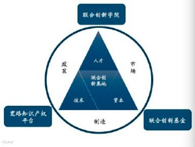

Proposal for establishing a global joint innovation base in Japan
Overview
Under the philosophy of "Global Wisdom, Joint Innovation," Japan Overseas Investment Co., Ltd. submits the concept of "Japan and the world jointly innovate", linking it with many years of experience in investment and collaboration beyond the industry. To build a "Japan Global Joint Innovation Base" (hereafter referred to as "base") with the Government of Japan, taking advantage of Japan's unique market, human resources, capital, manufacturing and technology, and the comprehensive advantages of government policy I do. The base will be comprised of three major platforms: a cross-industry investment fund, a global IP collaboration platform and a joint innovation academy. Promoting Japan as the “Global Joint Innovation Zone” with the greatest potential in the world economic zone, more and more Japanese and overseas companies, financial services organizations and human resources from various fields will attract, cooperate and win joint innovation in Japan. Reach Win and bring happiness to future generations.
Figure 1. Overall concept of joint innovation base
I. Establishment of Global Joint Innovation Lead Fund
Japan Overseas Investment Cooperation Co., Ltd. proposes to establish a Global Joint Innovation Lead Fund (hereinafter referred to as "Joint Innovation Fund") with the Japanese government and the Financial Institution. The Joint Innovation Lead Fund is made up of US dollar and Japanese yen funds. The main investment directions of the Joint Innovation Lead Fund are as follows. (1) Invest in the world's mature technology and intellectual property rights (“IP”) through the US dollar fund. (2) The Japanese Yen Fund invests in excellent IP and Japanese companies in cooperating companies established in Japan.
1. Positioning and investment method of the Joint Innovation Lead Fund
The investment strategy of the Joint Innovation Lead Fund is to pursue a return on investment while increasing the success rate of the invested company. The Joint Innovation Lead Fund selects mature technologies and IPs that meet the needs of Japanese industry around the world, docks those IPs with Japanese listed companies, SMEs and partners, jointly establishes joint ventures in Japan, Invest in some joint ventures.
2. Fund's advantage over traditional PE / VC
Japan Overseas Investment Co., Ltd. advocates the investment method of joint innovation, and the investment target is not the startup but the mature technology and IP in the world. Attract smart people and capital cooperation with mature technology. Through such a strong tag, the survival rate of the invested company can be greatly increased. At the same time, the Joint Innovation Fund features short investment cycles, fast exit routes, high financial leverage, and significant foreign currency savings.
3. Fund Management Team Advantage
Japan Overseas Investment Co., Ltd. and the cooperating management team have over 30 years of experience in Japan and overseas investment innovation.
II. Construction of Joint Innovation Academy
Japan Overseas Investment Cooperation Co., Ltd. proposes to build a global joint innovation academy in Japan in order to introduce foreign advanced technology, foster human resources for joint innovation, and land faster and better than global innovation technology. The Innovation Academy, based on the philosophy of "global vision, joint innovation, lifelong study, and continuous contribution", develops human resources who can grasp future science and technology for countries and companies, lead cross-border cooperation and global innovation. The Innovation Academy curriculum and teaching methods focus on three main areas: (1): Tracking and evolving global technology (2): Solving the challenges facing humanity through joint innovation. (3): Training of joint innovation human resources and leaders.
III.Introduction of intellectual property rights platform
The IPR platform invested and led by Japan Overseas Investment Co., Ltd. (hereafter referred to as the “platform”) attracts the world's most advanced IP and uses the Internet, big data, blockchain and other technological means to create IP The construction goal is to realize functions such as search, registration, protection, authorization, financing, and transactions. The platform gathers all professional services organizations (patents, laws, corporate services, arbitration, etc.) in the IP eco-chain, and aims to virtualize, capitalize, and spin out IP to take full advantage of advanced IP. To achieve. The Intellectual Property Rights Flag and Form complement each other with the Japan Property Rights Trading Center and provide an external trading route for it. The intellectual property platform has three aspects. First, Hula and Foam break the local restrictions through the Internet, the government endorses and supports them, and the legal and professional services organizations form a full-service protection alliance. To be able to enter the market. Second, with a large number of listed companies as the technology demand side, this platform will find a suitable technology target quickly and conveniently. Third, once the demand can be matched, the investment, company registration and human resource development associated with the Joint Innovation Base will quickly support the landing of a new company in Japan, sustain its development and create a joint innovation ecosystem.
Appendix
1. Introduction of Japan Overseas Investment Co., Ltd.
Japan Overseas Investment Co., Ltd. is an innovation-type investment corporation that provides financial services for joint innovation between Japan and overseas through global partners and federations. These include the management and investment of domestic and foreign funds, the operations of cross-industry joint innovation investment institutions, and the services of developing human resources across industries. Japan Overseas Investment Co., Ltd.'s vision is to become a respected capital, talent and share platform for globalization with a sense of mission. Satisfy market needs, seek global solutions, cross-border investment, joint innovation, and invest in innovation, invest in innovation, focus on technology and win the industry based on the investment concept. Focus on return and exit.
2. Investment fields and projects of Japan Overseas Investment Co., Ltd.
Japan Overseas Investment Co., Ltd. has many years of investment experience and has successfully invested in more than 100 intellectual property rights, science and technology companies and investment funds from Japan and abroad. The company is investing in areas such as financial innovation, life and health, industrial manufacturing 4.0, and advanced education.